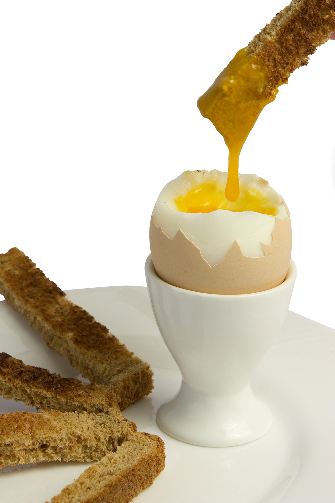

How To Boil An Egg
Everyone develops their own personal preference when it comes to boiling the perfect egg. This is the method that I have found to be the best!
Ingredients
- An Egg (can be more than one if needed!)
Method
- Get a small saucepan and pour in enough water to cover the eggs by 1cm.
- Bring to the boil and gently lower the eggs into the water, one at a time using a spoon.
- Switch on a timer and let the egg(s) simmer for 1 minute.
- Remove the pan from the heat, put a lid on it and set the timer again for either:
- 6 minutes to produce a soft, liquid yolk with a white that has just set but is still quite wobbly
- 7 minutes for a firmer, creamier yolk with a white that is completely set
Enjoy your egg with some buttered toast, cut into soilders!
